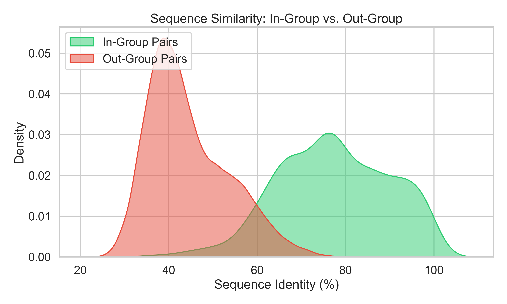
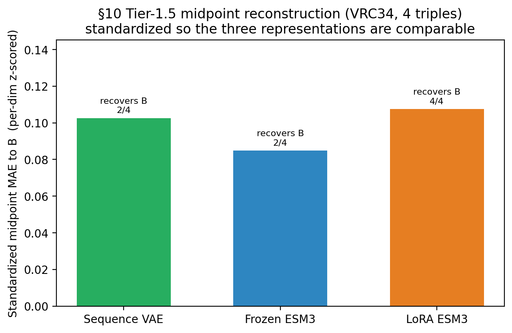
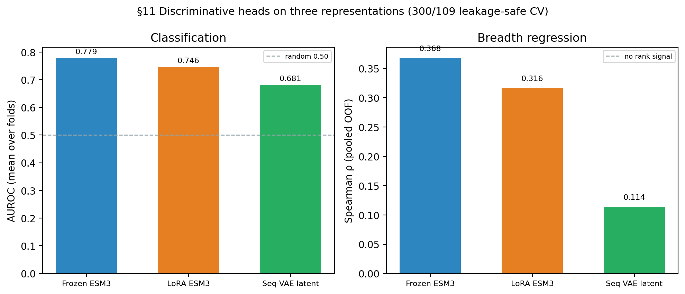

Evaluating ESM3 Representations and Whole-Sequence Generative Models for HIV Broadly Neutralizing Antibody Modeling
Abstract
We evaluate whether representations from the ESM3 protein foundation model transfer to sequence-only modeling of HIV broadly neutralizing antibodies (bnAbs), and whether domain adaptation via parameter-efficient fine-tuning alters this transfer. We partition heavy-chain sequences into metadata-derived groups and evaluate frozen ESM3 and domain-adapted representations on classification and regression tasks. Frozen ESM3 representations carry bnAb neutralization-breadth signal and produce higher classification point estimates than baseline features, although paired group-bootstrap intervals include zero. The evaluated OAS LoRA adaptation run does not improve downstream performance. We also evaluate a whole-sequence categorical variational autoencoder (VAE); its out-of-fold residue reconstruction accuracy is 64.2%. In a four-triple VRC34 maturation test, latent midpoints recover the known intermediate in two triples, but decoded midpoints remain farther from the target sequence than the nearer raw endpoint. These findings support frozen ESM3 as a viable exploratory representation for antibody modeling, while highlighting the importance of robust validation.
1. Introduction
HIV-1 broadly neutralizing antibodies (bnAbs) neutralize diverse viral variants by binding conserved envelope glycoprotein regions [1][2]. Unlike ordinary antibodies, bnAbs mature over years through somatic hypermutation, producing clonal lineages that share an unmutated common ancestor (UCA) but diverge in sequence and function (Figure 1).
Predicting neutralization breadth from variable heavy-chain ($V_H$) sequence alone is difficult because functional readouts depend on heterogeneous virus panels and inconsistent laboratory assays.
Protein language models learn contextual sequence representations from large unlabeled corpora. ESM3 reasons jointly over sequence, structure, and function [3][4]. We ask whether general-protein ESM3 embeddings support out-of-lineage bnAb modeling from heavy-chain sequence alone, and whether unsupervised adaptation on the Observed Antibody Space (OAS) [5] improves transfer.
Because antibody datasets contain somatically related variants, naive random splits can place members of the same clonal lineage in both training and validation folds. We implement metadata-derived lineage grouping with group-resampled uncertainty analysis on CATNAP [6]. Because the study compares multiple heads and pooling schemes on the same folds, cross-validation scores represent model-selection estimates rather than fully locked confirmatory performance.
We organize the study around three analyses: (1) a metadata-derived grouping protocol with group-resampled uncertainty quantifying sensitivity to cohort composition for CATNAP classification and regression; (2) matched evaluation of sequence features, frozen ESM3, and OAS-adapted ESM3 (LoRA) under identical downstream folds and heads; and (3) evaluation of a whole-sequence categorical VAE on out-of-fold reconstruction and a known-intermediate lineage interpolation test.

3. Data and Evaluation Protocol
3.1. CATNAP cohort and labels
We compile a dataset from CATNAP, which aggregates antibody sequences and quantitative viral neutralizations. The half-maximal inhibitory concentration ($\text{IC}_{50}$) measures potency against a specific viral isolate: lower values indicate higher antibody potency. We evaluate each antibody–virus pair as neutralized when $\text{IC}_{50} \leq 50\,\mu\mathrm{g/mL}$. Neutralization breadth $b_i$ for antibody $i$ is the fraction of tested measurements below that threshold:
We restrict analysis to antibodies tested against at least 20 virus strains. For binary classification, we assign broad ($1$) when $b_i \geq 0.50$ and narrow/weak ($0$) when $b_i \leq 0.20$, excluding the intermediate band to establish a high-contrast classification task rather than an arbitrary one-dimensional boundary. This is an analysis choice, not a biological or clinical cutoff: among 450 sequence-complete antibodies tested against at least 20 viruses, it excludes 150 middle-band antibodies and retains 300 labeled examples. We require complete complementarity-determining regions (CDRs), which form much of the antigen-binding surface (Figure 2).

The final labeled set contains 300 unique $V_H$ sequences (202 broad, 98 narrow), with lengths 116–146 amino acids. For continuous-breadth regression, we predict $b_i$ directly for these 300 antibodies.
3.2. Lineage grouping and split
To prevent leakage of closely related sequences, we partition antibodies using metadata-derived groups assigned sequentially: CATNAP clonal-lineage metadata (216 antibodies), shared-donor patient metadata (70), single-linkage clustering at $\geq 80\%$ Levenshtein identity (2), and singletons (12). This hierarchical assignment first produces 113 conservative group IDs; we then merge connected components linked by residual pairs at $\geq 80\%$ identity, producing 109 final groups, after which no cross-group near-duplicate pairs remain at this threshold. Across 862 in-group pairs, median sequence identity is $0.771$ (IQR $0.683$–$0.870$); across 43,988 out-group pairs, median identity is $0.424$ (IQR $0.377$–$0.504$) (Figure 3).

Both tasks use a single 5-fold StratifiedGroupKFold split so all antibodies in a
metadata-derived group remain in train or validation while stratifying the broad-vs-narrow ratio
per fold.
3.3. Metrics, selection, and uncertainty
Classification metrics are AUROC and AUPRC (average precision). AUROC measures the probability that a random positive ranks above a random negative; AUPRC evaluates precision–recall trade-offs under class imbalance. Regression metrics are Pearson $r$, Spearman $\rho$, and $R^2$.
Configuration selection uses mean validation-fold score (mean AUROC or mean Spearman $\rho$). Primary reporting uses pooled out-of-fold (OOF) predictions from all folds. We estimate 95% intervals with 10,000 bootstrap draws resampling complete metadata-derived groups. Paired deltas resample groups and compute metric differences on aligned OOF predictions. These intervals quantify sensitivity to the observed group composition but do not correct for configuration-selection bias.
3.4. OAS adaptation corpus
Domain adaptation uses 219,837 globally deduplicated human heavy-chain sequences from 11 OAS data units (108,675 clonotypes); the largest unit contributes 20,000 sequences (9.1%). Systematically 5$'$-truncated data units are excluded. A clonotype-aware split yields 198,130 training and 21,707 validation sequences. OAS supplies adaptation data only—we neither label OAS sequences as HIV bnAbs nor include them in downstream test folds [5]. For whole-sequence VAE pretraining we additionally protect every sequence that could later enter an evaluation: exact-match and $\geq 80\%$ normalized Levenshtein-identity protection retains 169,876 of the 219,837 OAS candidates, and a protected CATNAP adaptation set retains 143 of 568 candidate rows. These are training sources only; neither contributes evaluation rows.
3.5. Evaluation cohorts
Classification, regression, and whole-sequence VAE OOF reconstruction use a common evaluation cohort of the same 300 antibody IDs, heavy-chain sequences, labels, and 109 metadata-derived groups. Classification and regression use matched folds; the VAE uses an independent five-fold grouped partition of this cohort while preserving the same group-level separation between training and evaluation data.
The known-intermediate lineage analysis is a separate evaluation. It includes six VRC34 states drawn from the evaluation cohort and lineage-trajectory data, yielding four ordered triples. All six states are excluded from the shared OAS and CATNAP data used for VAE pretraining and adaptation.
4. Representations and Models
4.1. Handcrafted baseline
Seven features per $V_H$ sequence: length; charged, hydrophobic, aromatic, and cysteine fractions; cysteine count; and $N$-glycosylation-motif count. We evaluate logistic regression, random forest [25], and XGBoost [18]. XGBoost is the selected baseline; we retain length-only logistic regression as a diagnostic.
4.2. Frozen ESM3 and downstream heads
Residue embeddings from frozen esm3-sm-open-v1 (1.4B parameters) [4] yield $L \times 1536$ matrices per
sequence (excluding BOS/EOS tokens). Pooling schemes are (1) mean pooling (1536-d) and (2)
concatenated mean, max, and standard deviation (4608-d). Scaling and PCA fit strictly inside each
training fold. All downstream heads use scikit-learn [26].
Classification candidates are L1/L2 logistic regression (SAGA solver [27] for L1), random forest, XGBoost, and a PCA-50 multilayer perceptron, plus a separately trained additive attention-pooling classifier. Regression candidates are Ridge, random forest, and XGBoost, with a length-only Ridge floor. Appendix Table A1 lists hyperparameters.
4.3. OAS LoRA adaptation
LoRA [16] freezes base weights and injects rank-16 adapters ($\alpha=32$, dropout 0.05), training 18,874,368 parameters (1.33%). Adaptation uses masked language modeling [19] on 15% corrupted tokens for one epoch with AdamW [20] (effective batch 32). Clonotype-held-out validation reaches loss $0.5025$ (perplexity $1.653$). Adapters merge into the base model before embedding extraction.
4.4. Whole-sequence VAE
To model each antibody as one coherent unit, we train a categorical VAE [17] directly on complete heavy-chain sequences. We left-align each sequence in 170 slots and pad the remainder; each slot is one-hot encoded over 20 amino acids plus a PAD token, producing a 3570-dimensional input. A multilayer encoder (widths 2048, 1024, 256) maps the sequence to a 32-dimensional Gaussian latent variable, and a mirrored decoder produces $170\times21$ categorical logits. The objective combines categorical reconstruction cross-entropy with KL regularization under a linear $\beta$ warm-up; we bound posterior log-variance to $[-10, 6]$ and clip gradients to prevent non-finite training.
Training follows a protected staged protocol: the model pretrains on the protected OAS background, adapts once on protected non-evaluation CATNAP sequences, and independently fine-tunes from the shared adapted checkpoint inside each canonical outer training fold. Inner group-held validation selects the epoch count; refitting then uses all eligible outer-training rows. Each canonical antibody receives exactly one OOF reconstruction and latent vector. We report residue reconstruction accuracy, categorical cross-entropy, and Levenshtein edit distance.
4.5. Lineage interpolation and cross-representation controls
For the known-intermediate analysis we evaluate four ordered VRC34 triples $(A,B,C)$ in which $B$ is a known inferred intermediate. We encode each sequence to its posterior mean and form the midpoint $z_{\mathrm{mid}}=\tfrac{1}{2}(\mu_A+\mu_C)$. The latent test asks whether $z_{\mathrm{mid}}$ is closer to $\mu_B$ than either endpoint; the sequence test compares the decoded midpoint with $B$, the decoded endpoints, and the raw endpoint sequences. We run this test after OAS pretraining, CATNAP adaptation, and the fold that holds out the complete VRC34 group.
To compare the VAE against the foundation model on identical triples, we add frozen-ESM3 and LoRA-ESM3 embedding-interpolation controls: for each triple we globally align the per-residue embeddings of $A$ and $C$, form the embedding midpoint, and measure its distance to $B$. Because raw distances live on incomparable scales across the VAE latent, frozen ESM3, and LoRA ESM3, we report all arms after per-dimension standardization (unit variance), making midpoint errors directly comparable. The frozen- and LoRA-ESM3 embedding midpoints are decoded with the frozen ESM3 sequence head (the matched readout for both models); the VAE midpoint is decoded by its own head.
We also evaluate the whole-sequence VAE's 32-dimensional latent as a discriminative feature vector. To stay leakage-safe, each canonical antibody is encoded by the fold checkpoint that held its lineage out (its OOF posterior mean); we then apply the same classification and regression heads and grouped cross-validation as the ESM3 representations. The PCA-50 multilayer perceptron head is omitted for this arm because its component count exceeds the 32 latent dimensions.
5. Results
5.1. Classification
Table 1 separates the configuration-selection score (mean over folds) from the pooled OOF estimate and group-bootstrap interval. Among the four baselines (Table 2), random forest has the largest mean-fold AUROC ($0.671$), while the prespecified XGBoost comparator has the largest pooled OOF AUROC ($0.651$) and AUPRC ($0.771$). Against that XGBoost comparator, frozen ESM3 raises the pooled AUROC point estimate from $0.651$ to $0.773$ and pooled AUPRC from $0.771$ to $0.869$. On aligned predictions, the paired frozen-minus-baseline difference is $+0.122$ AUROC ($[-0.008, 0.240]$) and $+0.099$ AUPRC ($[-0.003, 0.189]$). Both intervals include zero; they describe sensitivity to held-out lineage composition and do not remove model-selection optimism.
LoRA's selected classifier reaches pooled AUROC $0.729$, below frozen by $-0.044$ (paired interval $[-0.108, 0.019]$). The corresponding AUPRC difference is $-0.051$ ($[-0.090, -0.010]$). This single adaptation run does not improve classification and reduces selected-model AUPRC on the observed cohort. Pooled OOF ROC and precision–recall curves appear in Figure 4.
The learned attention pool reaches mean-fold AUROC $0.769 \pm 0.117$, below the best fixed-pooling frozen model. Adding learned attention pooling did not improve mean-fold AUROC on this cohort.
| Representation | Fold AUROC | Pooled AUROC | 95% interval |
|---|---|---|---|
| Baseline XGB | $0.660 \pm 0.087$ | 0.651 | [0.559, 0.758] |
| Frozen ESM3 | $0.779 \pm 0.128$ | 0.773 | [0.692, 0.853] |
| OAS LoRA ESM3 | $0.746 \pm 0.129$ | 0.729 | [0.639, 0.818] |
Table 1: Broad-vs-narrow classification for the selected baseline, frozen, and LoRA ESM3 configurations. Intervals from group bootstrap.
| Model | Features | Fold AUROC | Pooled AUROC | Pooled AUPRC |
|---|---|---|---|---|
| Logistic regression | Length only | $0.614 \pm 0.104$ | 0.581 | 0.720 |
| Logistic regression | All seven | $0.574 \pm 0.139$ | 0.567 | 0.683 |
| Random forest | All seven | $0.671 \pm 0.089$ | 0.639 | 0.762 |
| XGBoost | All seven | $0.660 \pm 0.087$ | 0.651 | 0.771 |
Table 2: Classification baseline candidates. ``All seven'' denotes the complete handcrafted heavy-chain feature set; XGBoost is the prespecified comparator used for the paired uncertainty analysis.

5.2. Continuous breadth regression
Regression uses the same 300 threshold-selected antibodies. Frozen ESM3 reaches pooled Spearman $\rho = 0.368$ ($[0.157, 0.574]$), Pearson $r = 0.363$ ($[0.163, 0.564]$), and $R^2 = 0.107$ ($[-0.122, 0.307]$). The length-only pooled Spearman diagnostic baseline is $0.007$ (Table 3). The selected representation shows a positive pooled ranking association, while its absolute breadth predictions remain weak and sensitive to group composition.
Selecting LoRA configurations by mean-fold Spearman chooses random forest with mean pooling (pooled $\rho = 0.305$, $[0.052, 0.549]$). The paired LoRA-minus-frozen Spearman difference is $-0.062$ ($[-0.201, 0.082]$).
| Representation | Fold $\rho$ | Pooled $\rho$ | 95% interval |
|---|---|---|---|
| Frozen ESM3 | $0.380 \pm 0.319$ | 0.368 | [0.157, 0.574] |
| OAS LoRA ESM3 | $0.311 \pm 0.292$ | 0.305 | [0.052, 0.549] |
| Length only | — | 0.007 | — |
Table 3: Continuous breadth regression on pooled OOF predictions with group-bootstrap intervals.

5.3. Whole-sequence VAE reconstruction
Across the same canonical 300-antibody cohort used by classification and regression, the whole-sequence VAE attains mean OOF residue reconstruction accuracy $0.642$, categorical cross-entropy $1.348$, and sequence edit distance $43.35$. Reconstruction varies across the five grouped folds, with mean residue accuracy ranging from $0.563$ to $0.688$. Broad/positive antibodies are harder to reconstruct than narrow/weak antibodies (mean residue accuracy $0.597$ versus $0.735$). The model learns substantial sequence regularity but does not provide high-fidelity OOF reconstruction.
5.4. Known-intermediate lineage recovery
Table 4 reports the exact four-triple VRC34 midpoint test. At every stage, the latent midpoint is closer to the known intermediate than both latent endpoints in two of four triples — partial latent-geometry evidence, not consistent recovery across the trajectory. Decoded sequence recovery is unsuccessful under the stronger control: no decoded midpoint is closer to the known intermediate than the nearer raw flanking sequence. The OAS-pretrained model has the lowest decoded-midpoint mean edit distance ($24.75$); CATNAP adaptation and fold fine-tuning do not improve it.
| Stage | Latent recoveries | Latent midpoint | Decoded midpoint edit | Raw endpoint edit |
|---|---|---|---|---|
| OAS pretrained | 2/4 | 0.170 | 24.75 | 5.00 |
| CATNAP adapted | 2/4 | 0.211 | 29.25 | 5.00 |
| VRC34-held-out fold | 2/4 | 0.219 | 28.00 | 5.00 |
Table 4: Whole-sequence VAE known-intermediate results over four VRC34 lineage triples. Latent midpoint is the mean distance to the known intermediate (lower is better); edit columns are amino-acid Levenshtein distance. The latent midpoint is a VAE-internal raw distance and is not comparable across representations — the standardized comparison in Table 5 addresses that.
5.5. Standardized cross-representation midpoint comparison
To place the antibody-trained VAE next to the foundation model on identical triples, we add frozen-ESM3 and LoRA-ESM3 embedding-interpolation controls and report every arm after per-dimension standardization, so the three representations share a common unit-variance scale (raw midpoint distances differ by orders of magnitude — VAE latent $\approx 0.02$, frozen ESM3 $\approx 11$, LoRA ESM3 $\approx 14$). Table 5 reports the CATNAP-adapted stage over the four VRC34 triples. The sequence VAE and frozen ESM3 each place the midpoint nearer the known intermediate than both endpoints in two of four triples; the LoRA-ESM3 midpoint beats its own endpoints in all four, although its standardized midpoint distance is not the smallest. With four triples from a single lineage and no confidence intervals, this is descriptive only.
| Representation | Std. midpoint MAE | Recovers $B$ |
|---|---|---|
| Sequence VAE (latent) | 0.103 | 2/4 |
| Frozen ESM3 | 0.085 | 2/4 |
| LoRA ESM3 | 0.108 | 4/4 |
Table 5: Standardized (per-dimension z-scored) midpoint distance to the known VRC34 intermediate $B$, and the number of triples in which the midpoint beats both endpoints, for the CATNAP-adapted stage. Bold marks the smallest mean distance and the most consistent recovery, not a statistically tested winner.

5.6. Decoded-midpoint sequence recovery
The standardized comparison above is in representation space. To compare in sequence space, we decode each midpoint to amino acids and measure edit distance to the true intermediate $B$ (Table 6). Decoding the ESM3 embedding midpoints recovers the intermediate markedly better than the VAE (mean edit distance: LoRA $12.25$, frozen $18.75$, versus VAE $29.25$), and LoRA matches the raw-endpoint baseline on the first triple. None beats the raw-endpoint baseline on average ($5.00$), so midpoint interpolation still does not surpass simply taking the nearer flanking sequence; but the ESM3 decoders land far closer to the intermediate than the VAE.
| Triple ($\to B$) | Frozen ESM3 | LoRA ESM3 | Seq. VAE | Raw endpoint |
|---|---|---|---|---|
| $\to$ pI1 | 8 | 2 | 19 | 2 |
| $\to$ pI2 | 17 | 11 | 26 | 9 |
| $\to$ pI3 | 23 | 17 | 34 | 5 |
| $\to$ pI4 | 27 | 19 | 38 | 4 |
| Mean | 18.75 | 12.25 | 29.25 | 5.00 |
Table 6: Decoded-midpoint edit distance to the true VRC34 intermediate $B$. Frozen- and LoRA-ESM3 embedding midpoints are decoded with the frozen ESM3 sequence head; the VAE latent midpoint by its own decoder (CATNAP stage). Raw endpoint is the nearer flanking sequence (lower is better).
5.7. Sequence-VAE latent as a discriminative representation
We also test the whole-sequence VAE's 32-dimensional latent as a discriminative feature. To remain leakage-safe, each canonical antibody is encoded by the fold checkpoint that held its lineage out (its OOF posterior mean), and the same heads and grouped cross-validation as the ESM3 representations are applied. As Table 7 and Figure 7 show, the latent's best classifier reaches mean-fold AUROC $0.682$ and its best regressor pooled Spearman $0.114$ — both well below frozen ESM3 ($0.779$ / $0.368$) and LoRA ESM3 ($0.746$ / $0.305$). On this low-dimensional latent, linear heads outperform tree ensembles (random forest $0.608$, XGBoost $0.606$ AUROC), reversing the pattern on the high-dimensional ESM3 embeddings. The 32-dimensional reconstruction bottleneck therefore retains the least breadth-discriminative signal, though it remains above chance.
| Representation | AUROC (mean-fold) | Spearman (pooled) |
|---|---|---|
| Frozen ESM3 | 0.779 | 0.368 |
| LoRA ESM3 | 0.746 | 0.305 |
| Sequence-VAE latent | 0.682 | 0.114 |
Table 7: Best-head discriminative performance of the three representations on the canonical 300/109 leakage-safe split: classification mean-fold AUROC and breadth-regression pooled Spearman.

6. Limitations
6.1. Exploratory model selection
We compare heads and pooling schemes on the same five grouped folds used for reporting. Selecting the best mean-fold configuration makes reported cross-validation performance optimistic due to hyperparameter and model-selection leak. Group-bootstrap intervals condition on the selected predictions and do not account for that selection process. Confirmatory evaluation requires nested grouped cross-validation or a fully locked external lineage holdout.
6.2. Cohort and target construction
The cohort is small (300 sequences across 109 metadata-derived groups), limiting the statistical power of the architectural comparisons. Only $V_H$ chains enter the models, neglecting light-chain ($V_L$) contributions and heavy–light pairing, which are biochemically critical for folding, stability, and neutralization breadth of many HIV-1 bnAbs. CATNAP narrow/weak antibodies are not equivalent to arbitrary non-bnAbs, and breadth is treated as an unweighted fraction over viral panels that vary in size and strain composition, without accounting for laboratory-specific or panel-level effects.
6.3. Grouping assumptions
Metadata-derived clonal lineage is the strongest available grouping key, but patient-level fallback groups may merge unrelated antibodies from the same donor, while singletons may mask unrecorded genetic relationships. The $\geq 80\%$ sequence-identity clustering heuristic supports separation in aggregate but cannot biologically prove complete developmental independence or rule out convergent evolution.
6.4. Adaptation and ESM3 constraints
LoRA domain adaptation was evaluated on a single dataset with one adapter configuration and one training run. Unsupervised adaptation on OAS may align representations toward general repertoire characteristics at the expense of somatic hypermutation features required for HIV-1 gp120/gp41 binding. ESM3's 1.4B-parameter scale introduces substantial computational overhead compared to simpler sequence models, and non-commercial licensing constraints limit downstream translation.
6.5. Interpolation and VAE constraints
The whole-sequence VAE preserves antibody-level sequence context, but its left-aligned slots do not use biological IMGT/ANARCI numbering, so insertions and deletions can shift downstream positions. OOF reconstruction remains moderate, especially for broad antibodies. The known-intermediate analysis contains only four ordered triples from one inferred VRC34 trajectory, so it is a case study rather than a population estimate. Raw flanking sequences are naturally close to their known intermediate, which creates a strong and appropriate control. Finally, the model uses one random seed, and CATNAP adaptation reaches its epoch cap while validation loss is still improving.
6.6. Reproducibility boundary
Reported calculations can be reconstructed from saved OOF predictions and evaluation artifacts without retraining ESM3, the LoRA adapter, or the whole-sequence VAE. These artifacts support verification of internal consistency and reported calculations, but not bitwise reproduction of the GPU training runs, which used external clusters (Google Colab). The group bootstrap resamples the observed 109 metadata-derived groups and does not represent a new external cohort.
7. Conclusion
Under metadata-derived grouped evaluation, frozen ESM3 yields higher classification point estimates than the baseline XGBoost comparator and a positive pooled association with continuous breadth. However, paired classification intervals include zero and pooled $R^2$ remains low, so the evaluated $V_H$-only models do not provide accurate absolute breadth prediction on this cohort. The single OAS LoRA adaptation run does not improve downstream classification or regression performance.
The evaluated task differs from virus-centered resistance studies that score Env sequences against fixed antibodies [9][22][10] and from an antibody-centered structure-based breadth estimator for CD4-binding-site antibodies [29]. Here the model receives the variable heavy-chain amino-acid sequence as its sole input, without light-chain sequence, viral-envelope sequence, epitope labels, assay-panel metadata, or modeled structure. Because these studies use different inputs, targets, and split protocols, their AUROCs are not directly comparable. Against the prespecified baseline XGBoost comparator, frozen ESM3 increases pooled AUROC from $0.651$ to $0.773$, but the paired $+0.122$ difference has group-bootstrap interval $[-0.008, 0.240]$.
The whole-sequence VAE reconstructs $64.2\%$ of held-out residues on average. Its latent midpoint recovers the known VRC34 intermediate in two of four lineage triples, but decoded midpoints do not outperform the nearer raw endpoint. This supports partial latent organization, not successful sequence-level intermediate recovery.
Overall, the strongest contribution is methodological: metadata-derived grouping, matched evaluation, pooled OOF reporting, and group-resampled intervals materially change how these experiments should be interpreted. Future work should evaluate paired heavy/light-chain inputs and structural context, use larger external cohorts, repeat training across seeds, and replace left alignment with biologically numbered sequence positions.
References
- [1] Devin Sok and Dennis R. Burton. Recent progress in broadly neutralizing antibodies to HIV. Nature Immunology, 19(11):1179–1188, 2018.
- [2] Yubin Liu et al. Broadly neutralizing antibodies for HIV-1: efficacies, challenges and opportunities. Emerging Microbes & Infections, 9(1):194–206, 2020.
- [3] Thomas Hayes et al. Simulating 500 million years of evolution with a language model. Science, 387(6736):850–858, 2025.
- [4] EvolutionaryScale Team. ESM3: open model weights (esm3-sm-open-v1). 2024.
- [5] Tobias H. Olsen et al. Observed Antibody Space. Protein Science, 31(1):141–146, 2022.
- [6] Hyejin Yoon et al. CATNAP: a tool to compile, analyze and tally neutralizing antibody panels. Nucleic Acids Research, 43(W1):W213–W219, 2015.
- [7] Nicole A. Doria-Rose et al. Developmental pathway for potent V1V2-directed HIV-neutralizing antibodies. Nature, 509:55–62, 2014.
- [8] Jinal N. Bhiman et al. New member of the V1V2-directed CAP256-VRC26 lineage. Journal of Virology, 90(1):76–91, 2016.
- [9] Vlad-Rareș Dănăilă et al. Machine learning in HIV neutralizing antibodies research—a systematic review. Artificial Intelligence in Medicine, 134:102429, 2022.
- [10] Mohammed El Anbari et al. BRAVE: predicting HIV-1 antibody resistance with protein language models. bioRxiv, 2025.
- [11] Zeming Lin et al. Evolutionary-scale prediction of atomic-level protein structure with a language model. Science, 379(6637):1123–1130, 2023.
- [12] Jeffrey A. Ruffolo et al. Deciphering antibody affinity maturation with language models. arXiv:2112.07782, 2021.
- [13] Tobias H. Olsen et al. AbLang: an antibody language model. Bioinformatics Advances, 2(1):vbac046, 2022.
- [14] Henry Kenlay et al. Large scale paired antibody language models. PLOS Computational Biology, 20(12):e1012646, 2024.
- [15] Nicolas Deutschmann et al. Do domain-specific protein language models outperform general models on immunology tasks? ImmunoInformatics, 14:100036, 2024.
- [16] Edward J. Hu et al. LoRA: Low-Rank Adaptation of Large Language Models. ICLR, 2022.
- [17] Diederik P. Kingma and Max Welling. Auto-Encoding Variational Bayes. ICLR, 2014.
- [18] Tianqi Chen and Carlos Guestrin. XGBoost: A scalable tree boosting system. KDD, 2016.
- [19] Jacob Devlin et al. BERT: Pre-training of Deep Bidirectional Transformers. NAACL, 2019.
- [20] Ilya Loshchilov and Frank Hutter. Decoupled weight decay regularization. ICLR, 2019.
- [21] Saul B. Needleman and Christian D. Wunsch. A general method applicable to the search for similarities in amino acid sequences. Journal of Molecular Biology, 48(3):443–453, 1970.
- [22] Aime Bienfait Igiraneza et al. Learning patterns of HIV-1 resistance to broadly neutralizing antibodies with reduced subtype bias using multi-task learning. PLOS Computational Biology, 20(11):e1012618, 2024.
- [23] Tobias H. Olsen et al. Addressing the antibody germline bias and its effect on language models for improved antibody design. Bioinformatics, 40(11):btae618, 2024.
- [24] Mamahdi14. Antibody Structure. Wikimedia Commons, 2016. CC BY-SA 4.0.
- [25] Leo Breiman. Random Forests. Machine Learning, 45(1):5–32, 2001.
- [26] F. Pedregosa et al. Scikit-learn: Machine Learning in Python. Journal of Machine Learning Research, 12:2825–2830, 2011.
- [27] Aaron Defazio, Francis Bach, and Simon Lacoste-Julien. SAGA: A Fast Incremental Gradient Method With Support for Non-Strongly Convex Composite Objectives. NeurIPS, 27:1646–1654, 2014.
- [28] Peter J. A. Cock et al. Biopython: freely available Python tools for computational molecular biology and bioinformatics. Bioinformatics, 25(11):1422–1423, 2009.
- [29] Simone Conti and Martin Karplus. Estimation of the breadth of CD4bs targeting HIV antibodies by molecular modeling and machine learning. PLOS Computational Biology, 15(4):e1006954, 2019.
Appendix
A.1. Candidate configurations
Table A1 records compared model families and fixed settings that materially affect interpretation. Figure A1 shows relative importances of handcrafted biophysical features in the baseline XGBoost classifier.

| Component | Candidates and fixed settings |
|---|---|
| Handcrafted classifier | LR, RF, XGB; seven features; RF/XGB depth 3; grouped five-fold CV |
| Frozen/LoRA classifier | L1/L2 LR, RF, XGB, MLP; mean or mean+max+std pooling; RF 300 trees/depth 3; XGB 200 trees/depth 3; MLP after PCA-50 |
| Attention classifier | Additive token attention; masked pooling, dropout 0.4, weight decay $10^{-2}$, 120 epochs |
| Frozen/LoRA regressor | Ridge, RF, XGB; mean or mean+max+std; RF 300 trees/depth 4; XGB 200 trees/depth 3 |
| OAS adaptation | One rank-16 LoRA run; $\alpha=32$, dropout 0.05, learning rate $10^{-4}$, one epoch, effective batch 32 |
| Whole-sequence VAE | 3570–2048–1024–256→32 encoder, mirrored decoder; categorical reconstruction CE + KL with linear $\beta$ warm-up; staged OAS→CATNAP→fold protocol; one seed |
Table A1: Evaluated configurations. Selected cross-validation estimates remain exploratory because candidates share reporting folds.
A.2. Classification detail
Table A2 reconciles configuration-selection scores with pooled estimates from the main text.
| Representation | AUROC | AUPRC | Fold AUROC |
|---|---|---|---|
| Baseline XGB | 0.651 | 0.771 | $0.660 \pm 0.087$ |
| Frozen ESM3 RF | 0.773 | 0.869 | $0.779 \pm 0.128$ |
| OAS LoRA ESM3 RF | 0.729 | 0.819 | $0.746 \pm 0.129$ |
Table A2: Classification metrics reconciled from aligned OOF predictions. Frozen and LoRA RF use mean+max+std pooling; configurations maximize mean-fold AUROC.
A.3. Regression detail
| Representation | Spearman | Pearson | $R^2$ |
|---|---|---|---|
| Frozen ESM3 | 0.368 | 0.363 | 0.107 |
| OAS LoRA ESM3 | 0.305 | 0.310 | 0.046 |
| Length-only Ridge | 0.007 | $-0.031$ | $-0.037$ |
Table A3: Pooled OOF breadth-regression metrics.
A.4. Evaluation cohort provenance
Table A4 summarizes the cohorts used for each reported evaluation. The primary out-of-fold analyses share one harmonized CATNAP cohort, whereas the known-intermediate analysis augments that cohort only with the specified VRC34 lineage states. OAS and protected non-evaluation CATNAP sequences are used only for model training.
| Analysis | Evaluation cohort | Scope |
|---|---|---|
| Classification | Harmonized CATNAP | 300 antibodies / 109 groups |
| Regression | Harmonized CATNAP | same 300 / 109 |
| Sequence-VAE OOF | Harmonized CATNAP | same 300 / 109; independent folds |
| Sequence-VAE known intermediate | CATNAP + VRC34 trajectories | 4 triples / 6 states |
Table A4: Evaluation cohorts used in the reported analyses. OAS and protected non-evaluation CATNAP sequences are used only for training.
A.5. Per-configuration discriminative results
Tables A5 and A6 report every fixed-pooling configuration compared for frozen and LoRA representations. The entries are not independent experiments: all candidates reuse the same five reporting folds, and selection uses the mean-fold column even when a different configuration has a larger pooled estimate. Figures A2 and A3 show the complete classification and regression sweeps.


| Configuration | Frozen AUROC | Frozen AUPRC | LoRA AUROC | LoRA AUPRC |
|---|---|---|---|---|
| RF, mean+max+std | 0.779 | 0.878 | 0.746 | 0.854 |
| RF, mean | 0.761 | 0.863 | 0.732 | 0.842 |
| XGB, mean+max+std | 0.755 | 0.861 | 0.671 | 0.781 |
| L1 LR, mean | 0.753 | 0.857 | 0.734 | 0.835 |
| L1 LR, mean+max+std | 0.735 | 0.856 | 0.712 | 0.817 |
| XGB, mean | 0.733 | 0.839 | 0.706 | 0.814 |
| L2 LR, mean+max+std | 0.720 | 0.846 | 0.662 | 0.791 |
| MLP, mean+max+std | 0.699 | 0.821 | 0.637 | 0.742 |
| L2 LR, mean | 0.697 | 0.830 | 0.728 | 0.829 |
| MLP, mean | 0.696 | 0.831 | 0.703 | 0.787 |
Table A5: Mean grouped-fold classification results for all frozen and LoRA fixed-pooling candidates. Bold marks the frozen and LoRA configurations selected by mean-fold AUROC.
| Configuration | Frozen fold $\rho$ | Frozen pooled $\rho$ | LoRA fold $\rho$ | LoRA pooled $\rho$ |
|---|---|---|---|---|
| RF, mean | 0.380 | 0.368 | 0.311 | 0.305 |
| RF, mean+max+std | 0.364 | 0.353 | 0.307 | 0.301 |
| XGB, mean+max+std | 0.355 | 0.360 | 0.279 | 0.271 |
| XGB, mean | 0.326 | 0.336 | 0.310 | 0.316 |
| Ridge, mean+max+std | 0.241 | 0.237 | 0.255 | 0.265 |
| Ridge, mean | 0.157 | 0.193 | 0.278 | 0.297 |
| Length-only Ridge | 0.133 | 0.007 | 0.133 | 0.007 |
Table A6: Mean-fold and pooled-OOF regression Spearman correlations for all candidates. Bold marks the configurations selected by mean-fold Spearman.
A.6. Paired resampling results
Predictions are aligned by antibody ID and complete metadata-derived groups are resampled as units. Table A7 gives the paired differences and their group-bootstrap intervals.
| Comparison | Metric | $\Delta$ | Low | High |
|---|---|---|---|---|
| Frozen–baseline | AUROC | 0.122 | $-0.008$ | 0.240 |
| Frozen–baseline | AUPRC | 0.099 | $-0.003$ | 0.189 |
| LoRA–frozen | AUROC | $-0.044$ | $-0.108$ | 0.019 |
| LoRA–frozen | AUPRC | $-0.051$ | $-0.090$ | $-0.010$ |
| LoRA–frozen | Spearman | $-0.062$ | $-0.201$ | 0.082 |
| LoRA–frozen | Pearson | $-0.053$ | $-0.215$ | 0.102 |
| LoRA–frozen | $R^2$ | $-0.062$ | $-0.242$ | 0.099 |
Table A7: Paired group-bootstrap differences for the selected configurations. Intervals quantify sensitivity to the observed metadata-derived groups and do not correct for configuration selection.
A.7. Whole-sequence VAE fold summary
The sequence VAE evaluates each canonical antibody exactly once OOF; the independent grouped folds preserve the canonical group leakage boundary. Table A8 reports reconstruction by grouped fold.
| Fold | OOF rows | Residue accuracy | Mean edit distance |
|---|---|---|---|
| 0 | 72 | 0.602 | 48.46 |
| 1 | 92 | 0.673 | 39.98 |
| 2 | 61 | 0.688 | 38.54 |
| 3 | 36 | 0.650 | 41.72 |
| 4 | 39 | 0.563 | 50.90 |
Table A8: Whole-sequence VAE OOF reconstruction by grouped fold.
A.8. Known-intermediate VRC34 sequences and decoded midpoints
The four known-intermediate triples use the six VRC34 lineage states below (heavy-chain $V_H$, gap-stripped). For each triple $(A,B,C)$, Table A9 reports the edit distance to the true intermediate $B$ for the frozen-ESM3 and LoRA-ESM3 embedding midpoints (decoded by the frozen ESM3 sequence head) and the VAE latent midpoint (decoded by its own head at the OAS, CATNAP, and fold stages). Across all models and stages the differences concentrate in CDR3, the ESM3 decoders land closer to $B$ than the VAE, and none beats the nearer raw-endpoint baseline.
VRC34-UCA QVQLVQSGAEVKKPGASVKVSCKASGYTFTGYYMHWVRQAPGQGLEWMGWINPNSGGTNYAQKFQGRVTMTRDTSISTAYMELSRLRSDDTAVYYCARDKYYGNEAVGMDVWGQGTTVTVSS VRC34-pI1 QVQLVQSGAEVKKPGASVKVSCKASGYTFTGYYMHWVRQAPGQGLEWMGWINPNSGGTNYAQKFQGRVTMTRDTSISTAYMEVSRLTSDDTAVYYCARDKYYGNEAVGMDVWGQGTTVTVSS VRC34-pI2 QEVLVQSGAEVKKPGASVKVSCKASGYTFTGHHMHWVRQAPGQGLEWMGWINPNSGGTNYAQKFQGRVTMTRDTSINTAYLDVTRLTSDDTAIYYCARDKYYGNEAVGMDVWGQGTTVTVSS VRC34-pI3 QEVLVQSGAEVKKPGASVKVSCKAFGYTFTGNPMHWVRQAPGQGLEWMGWINPHSGDTTTAQKFQGRVYMTRDKSINTAYLDVTRLTSDDTAIYYCARDKYYGNEAVGMDVWGQGTTVTVS VRC34-pI4 QEVLVQSGAEVKKPGASVKVSCRAFGYTFTGNALHWVRQAPGQGLEWLGWINPHSGDTTTSQKFQGRVYMTRDKSINTAYLDVTRLTSDDTAIYYCARDKYYGNEAVGMDVWGQGTTVTVS VRC34.01 QEVLVQSGAEVKKPGASVKVSCRAFGYTFTGNALHWVRQAPGQGLEWLGWINPHSGDTTTSQKFQGRVYMTRDKSINTAFLDVTRLTSDDTGIYYCARDKYYGNEAVGMDVWGQGTSVTVSS
| Triple ($A\to B\to C$) | Frozen ESM3 | LoRA ESM3 | VAE (OAS/CAT/fold) | Raw endpoint |
|---|---|---|---|---|
| UCA→pI1→pI2 | 8 | 2 | 16 / 19 / 18 | 2 |
| pI1→pI2→pI3 | 17 | 11 | 24 / 26 / 26 | 9 |
| pI2→pI3→pI4 | 23 | 17 | 28 / 34 / 32 | 5 |
| pI3→pI4→VRC34.01 | 27 | 19 | 31 / 38 / 36 | 4 |
Table A9: Decoded-midpoint edit distance to the true intermediate $B$ for every model and VAE stage. Raw endpoint is the nearer flanking sequence (lower is better).
A.9. Reproducibility limits
Reported calculations can be reconstructed from saved OOF predictions and evaluation artifacts without retraining ESM3, the LoRA adapter, or the whole-sequence VAE. These artifacts support verification of internal consistency and reported calculations, but not bitwise reproduction of the GPU training runs. The group bootstrap resamples the observed 109 metadata-derived groups and does not represent a new external cohort, and its intervals remain conditional on the selected model configurations. Confirmatory evidence would require a locked external cohort or nested grouped model selection, repeated adapter and VAE seeds, biologically numbered sequence alignment, and additional known-intermediate lineages.